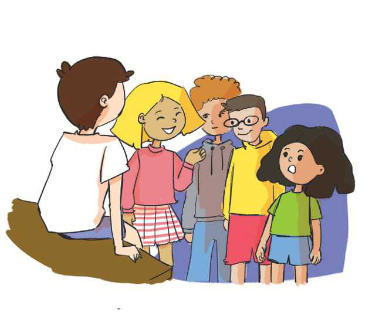

TEMATIKA 2: KARRIERA IME
1.DITA E DIELLI BISEDOJNË PËR PROFESIONET

Dita dhe Dielli të entuziazmuar po u tregonin shokëve e shoqeve të klasës vizitën e tyre në punëtori.
- Në punëtori kishte shumë punëtorë, – tregoi Dielli.
- Po! Aty takuam edhe menaxherin, që e kontrollonte shpesh punën e tyre! Por mua më shumë më pëlqyen bujqit, që po qethnin delet. Isha me fat që i takova gjatë rrugës! – shtoi Dita.
– Uau, çfarë është menaxheri? Po bujqit? Për çfarë po flisni ju të dy? – ndërhyri njëra nga shoqet e tyre.
Dita dhe Dielli nuk ngurruan dhe e ndihmuan shoqen që t’i njihte profesionet.